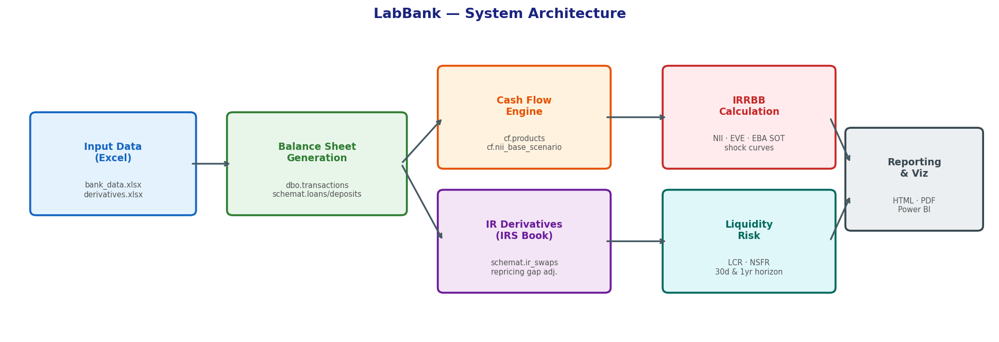

This guide gets you running in one of two ways: exploring the shipped demo bank in LabBank with nothing but Python, or standing up the full SQL-Server-backed pipeline so you can generate and explore your own balance sheet. Pick the path that matches what you want to do — you can always start with Path A and move to Path B later.
Practitioners, risk/ALM analysts, and students who want to see a complete ALM pipeline — from synthetic transaction generation through NII/EVE/EBA SOT/LCR/NSFR — and interact with the results rather than just read about them.

Use this if you want to explore the ALM concepts and stress a pre-built balance sheet interactively. Nothing here touches SQL Server.
Prerequisites: Python 3.10 or later.
git clone <this-repo-url>
cd bank_project
python -m venv venv
Activate the environment:
# Windows (PowerShell)
.\venv\Scripts\Activate.ps1
# macOS/Linux
source venv/bin/activate
Install and run:
pip install -r requirements.txt
streamlit run sandbox/app.py
Streamlit opens a browser tab at http://localhost:8501. You'll see six tabs: Balance Sheet, ALM Metrics, Gap Analysis, Market Curves, NMD Stress, and IRS Book. Everything is computed from files already checked into the repo (runs/<bank>/optimize_prep/*.npz, inputs/pln/balance/bank_data.xlsx, and a few supporting Excel files) — no database, no credentials, no orchestration engine involved.
What to try first: open the Balance Sheet tab, change a percentage in the "✏️ New %" column (both Assets and Liabilities+Equity must each sum to 100%), then check the ALM Metrics tab to see how NII, EVE, and the EBA Supervisory Outlier Test respond.
| Symptom | Likely cause / fix |
|---|---|
ModuleNotFoundError on streamlit run |
The venv isn't activated, or pip install didn't finish — re-run the two commands above. |
| Port 8501 already in use | Another Streamlit app is running. Run streamlit run sandbox/app.py --server.port 8502 instead. |
| Charts look stale after editing files | Click "🔄 Reload my data" in the sidebar — the app caches loaded data and doesn't watch the filesystem for changes. |
Use this if you want to build a balance sheet from your own numbers rather than stress the shipped demo one. This path uses SQL Server as the integration/audit layer — every intermediate step (transactions, cash flows, IRRBB results) lands in a real database you can query directly, which is deliberate: being able to run your own SELECTs and aggregations against the data is part of the point, not just a means to an end.
Any edition works — SQL Server Developer Edition is free and full-featured, or use SQL Server Express for a lighter footprint. You also need the ODBC Driver 17 for SQL Server (or adjust the driver string in step 3 if you install a different version).
Create one empty database per bank — bank_gen_pln for the PLN bank (and bank_gen_eur if you also want the EUR bank). Any tool works — SSMS, Azure Data Studio, or sqlcmd:
CREATE DATABASE bank_gen_pln;
CREATE DATABASE bank_gen_eur; -- optional, only for the EUR bank
You do not need to create tables or schemas manually — each module creates its own schema and tables the first time it runs (see sql_setup.py → reset_data(mode=0) in each module). Both databases get the identical set of schemas and tables.
All connection settings live in one place, labbank_common/bank_config.py (SqlCfg):
@dataclass(frozen=True)
class SqlCfg:
db_name: str
server: str = "localhost"
driver: str = "ODBC+Driver+17+for+SQL+Server"
Change the server default to your own SQL Server instance name (e.g. localhost, localhost\SQLEXPRESS, or a named instance) and, if needed, the driver. Every module gets its engine from get_engine() in that file.
The connection uses Windows Trusted Authentication by default (no password stored anywhere). If your SQL Server uses SQL authentication instead, change Trusted_Connection=yes to UID=...;PWD=... in SqlCfg.url — don't commit real credentials if you do this in a shared repo.
One codebase serves several banks. Each bank has its own SQL database and its own input/output folders (inputs/<bank>/, runs/<bank>/<module>/), and is defined in labbank_common/bank_config.py. The active bank comes from the LABBANK_BANK environment variable (eur by default; pln for the Polish bank):
$env:LABBANK_BANK = "pln"
python irrbb_calc\python_code\eve_calc_workflow.py
In Dagster every asset is partitioned by bank — pick the pln or eur partition when launching a job. The sandbox serves one bank per process: streamlit run sandbox/app.py -- --bank pln.
.\dagster_pipeline\start_dagster.ps1
Open the Dagster UI (usually http://localhost:3000) and launch a job:
| Job | When to use it |
|---|---|
balance_sheet_job |
First run, or whenever you only need to regenerate the balance sheet + IRS positions. |
full_run_job |
Full pipeline: balance sheet → cash flows → IRRBB → liquidity. |
labbank_data_job |
Use this one for the "generate your own balance sheet" loop below — runs everything full_run_job does, plus rebuilds the npz tensors LabBank reads. |
irs_update_job |
Swap book changed, balance sheet didn't. |
irrbb_recalc_job |
Market curves changed, balance sheet and cash flows didn't. |
liq_only_job |
Refresh LCR/NSFR only. |
Since the goal here is getting to LabBank, labbank_data_job is the only one you need for the loop below — the others are fine-grained shortcuts for narrower changes (see README.md's full jobs table, which also lists optimize_prep_job for rebuilding LabBank's tensors on their own).
inputs/pln/balance/bank_data.xlsx with your own product balances, rates, and currencies. For swaps, edit inputs/pln/derivatives/derivatives.xlsx (next to bank_data.xlsx). If you're changing which products exist (not just their weights), also check inputs/pln/models/interest_rt.xlsx — the client-rate model: one row per report_date × product with bs_side (A / L / A/L, descriptive), beta (pass-through of the index), margin_pct (product-level margin in percentage points; blank/0 = loans keep their own contract margin), and optional index_floor/index_cap/client_floor/client_cap (see the methodology doc's "Rate floors and caps" section). The add_data stage loads it into SQL table bs.models_rate, which is what every later stage reads — so if you feed your own data straight into SQL, insert the rate model there instead of editing the Excel file. Every deposit product must have a row (the pipeline stops otherwise); a loan or instrument with no row gets beta = 1, its contract margin and no floor/cap. On asset rows beta and margin_pct may be left blank (= beta 1 + contract margin); liability rows must state beta explicitly.labbank_data_job in Dagster.streamlit run sandbox/app.py, or if it's already running, just refresh) and click "🔄 Reload my data" in the sidebar.Repeat steps 1–3 as many times as you like; SQL Server stays up the whole time.
Products the bank can sell but does not hold (catalogue). A bs_structure row with bs_percentage 0 is a catalogue product: no contracts are generated, but the roll-forward can sell it (a positive share_new_pct in inputs/<bank>/forecast/growth_plan.xlsx) and the optimizers can buy it (one new-business unit cohort per product, optimize_prep/python_code/catalogue_params.py). Other tenors / fixing frequencies of a held product go in the catalogue sheet of bank_data.xlsx, one row per variant: parent_code, bs_side, product_code (a new 4-digit code), own_name, and only the terms that differ (maturity, payment_freq, fixing_freq, rate_index, amort_type; blank = the parent's). The variant inherits everything else from its parent: the bs_structure row (LCR / NSFR / RWA / PD / LGD / fees) and the client-rate, prepayment, term-deposit redemption and NMD models (labbank_common/catalogue.py), so it is the parent's product with other contract terms. The EUR bank ships 20 variants (term deposits 1M / 3M / 12M / 24M, mortgages 20Y / 25Y / 30Y fixed and 1M / 3M / 6M floating, 1M / 3M / 6M floating cash, SME and corporate loans). LabBank hides catalogue products — it shows the book the bank holds. After adding variants, rebuild the growth plan (python balance_generate/python_code/make_growth_plan.py --bank eur; existing shares are kept as today's composition, variants start at 0).
Each stage can also be run as a standalone script, in this order:
python balance_generate/python_code/b_s_gen_workflow.py
python balance_gen_add_data/python_code/b_s_add_data_workflow.py
python cash_flow_calc/python_code/cf_calc_workflow.py
python ir_derivatives/python_code/swap_workflow.py
python irrbb_calc/python_code/nii_calc_workflow.py
python irrbb_calc/python_code/eve_calc_workflow.py
python irrbb_calc/python_code/eba_sot_workflow.py
python liq_calc/python_code/lcr_nsfr_workflow.py
python optimize_prep/python_code/opt_prep_workflow.py
Dagster is recommended over this because it enforces dependency order and keeps a run history — but the scripts work fine standalone if you'd rather not run Dagster at all.
| Symptom | Likely cause / fix |
|---|---|
pyodbc.InterfaceError / driver not found |
The ODBC Driver 17 isn't installed, or you have a different version — check installed drivers (odbcinst -j on Linux/Mac, ODBC Data Source Administrator on Windows) and update the driver= string in all 7 sql_setup.py files to match. |
| Login failed / trusted connection error | Trusted_Connection=yes uses your current Windows login. If SQL Server runs under a different account or on a different machine, you'll need SQL authentication instead (see step 2). |
IF NOT EXISTS ... CREATE SCHEMA errors on first run |
Confirm the bank's database (bank_gen_pln / bank_gen_eur) exists and your login has db_owner (or at least CREATE SCHEMA/CREATE TABLE) permission on it. |
LabBank still shows the old balance sheet after labbank_data_job |
Click "🔄 Reload my data" — the app doesn't auto-detect file changes on disk. |